不同角色关心的东西不一样,不必从头读到尾。按下表挑对你的路径:
| 你是谁 | 先读 | 再读 | 用到再查 |
|---|---|---|---|
| 独立开发者 / 一人多项目 | 第 1、3 章 | 第 4~7 章(需求主线) | 第 8~10、16 章 |
| 小团队负责人 | 第 1、2 章 | 第 4~9 章 + 第 16 章(项目设置) | 第 12、13 章(外部连接) |
| 平台与效能团队 | 第 1 章 + 第 17 章(总览与交付分析) | 第 12、13、15 章 | 第 20~22 章(边界 / 速查 / FAQ) |
| 管理员(部署与接入) | 第 3、10 章 | 第 12~16 章 | 第 20、21、22 章 |
三条阅读约定:
本章摘要:CodeFlow 是一套从需求到交付的 AI 流水线平台——需求说清楚,后面的活 AI 干,人只做澄清与验收。
一句话定位:它不替你想清楚要做什么,它替你把做过的每一步留下来。写代码已经很快了,真正拖慢交付的是上下文在人和工具之间反复丢失:需求散落各处、每步做完就散、换人接手全部重来。CodeFlow 把一次交付拆成一条有状态、可回看、可交接的流水线:需求怎么进来、AI 怎么接活、在哪台机器上干、产物和结论怎么留、人什么时候必须介入——每一步都有归属。
它不做什么(划边界比吹功能重要):
用数据说话(来自真实交付环境的运行记录,非演示数据):
| 实测项 | 数字 |
|---|---|
| 单条需求全自动开发耗时 | 20~50 分钟(四步交付流程) |
| 压测类交付实测 | 20 并发 × 50 次:50/50 成功,QPS 1975.77,错误 0 |
| 全链路交付实测 | 浏览 → 加购 → 下单 → 管理端发货 → 已发货,走通 |
| 澄清对话真实反问 | 最多 19 个问题(边界 / 技术栈 / 验收标准 / 回滚) |
不同团队的需求复杂度、模型选择和运行环境差异很大,建议先用一条真实需求试点,再决定接入团队流程。
本章摘要:登录后选项目;界面是「顶栏 + 左树 + 内容区 + 状态栏」的统一骨架,主题色与壁纸可换,骨架不变。
http://<平台地址>:7001/register 注册首个用户,建组织即成为管理员;之后所有成员从登录页进入。登录后先选项目——所有业务数据都归属某个项目:

登录后的整体布局:
| 区域 | 说明 |
|---|---|
| 顶栏 | 品牌 → 当前页面路径 → 搜索框(⌘K 命令面板)→ 项目切换 → 通知 → 外观切换 → 用户菜单 |
| 左侧导航树 | 五组:需求交付(需求录入/交付流程/运行记录)、分析(交付分析/操作审计)、执行与自动化(运行节点/AI 数字员工)、配置资产(代码仓库/AI 记忆/AI 技能/状态流转)、项目设置(外部连接/成员管理/配置备份/环境变量/回收站) |
| 内容区 | 各功能页;列表类页面为「墨色横幅 + 一句话说明 + 工具栏 + 内容面板」的统一骨架 |
| 底部状态栏 | 命令面板入口 / 当前项目 / 语言切换 / 明暗外观切换 / 平台版本 |


本章摘要:注册即管理员 → 4 步引导跑起运行节点 → 建第一条需求走通全链路。先跑通一条,再并行多条。
第一次登录并选择项目后,系统自动进入 4 步引导页(/onboarding,可随时跳过,也能从「关于平台」页重放):
| 步 | 内容 | 要点 |
|---|---|---|
| 1 认识模型 | 「需求进 · 交付出」的流水线示意 | 记住关键认知:AI 数字员工由你部署的运行节点驱动,不在浏览器里 |
| 2 跑起运行节点(必做) | 可复制的启动代码块 + 实时探测 | 在「运行节点」页注册拿到 ID/Token → 机器上配 env → 启动 daemon;本页每 3 秒自动探测,状态变绿即可继续 |
| 3 认识预置阵容 | 开发与评审编队、AI 数字员工、交付流程模板 | 开箱可用;自定义编队 / AI 生成流程 / 登记仓库为可选 |
| 4 打通需求源 | 禅道绑定三要素 + 测试连接 | 可选:跳过也能直接「新建需求」体验交付 |
建议的上手节奏:先跑通一条需求(澄清 → 派发 → 验收),再给 AI 数字员工配运行节点,然后开始并行两条,最后把踩过的坑沉淀进 AI 技能和 AI 记忆。不要一上来就配四个角色。
本章摘要:项目是数据归属的边界;项目总览回答"新增了多少、交付了多少、还压着什么"。

项目总览(左树第一项)KPI 卡两排四列、同构等高:上排「交付结果」(新增需求 / 已完成需求 / 平均交付周期 / 一次通过率),下排「质量指标」(返工率 / 进行中需求 / Token 消耗 / 待你处理);每卡「标题 + 大数字 + 至多两行说明」,趋势卡带迷你折线,口径说明收进标题旁的 ⓘ 悬浮;页顶一句话结论条直接回答「近 7 天新增多少、交付多少、还压着什么」;右上「近一周 / 近一个月」切换统计范围;下方两张表列出当前用户待处理与近期新增的需求。
本章摘要:需求是全平台的中心对象:录入 → 澄清 → 启动交付 → 跟踪 → 验收,每一步在详情页都有归属。
需求录入页的定位一句话:录入需求与缺陷,在这里发起 AI 澄清、派发交付并跟踪结果。
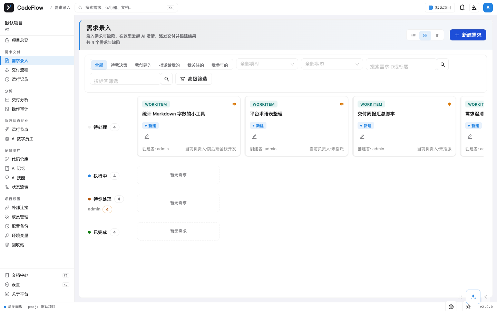
| 元素 | 说明 |
|---|---|
| 范围页签 | 全部 / 待我决策 / 我创建的 / 指派给我的 / 我关注的 / 我参与的 |
| 类型/状态筛选 | 按需求类型(需求/缺陷)与状态节点过滤 |
| 搜索框 | 按需求 ID 或标题搜索 |
| 标签筛选 / 高级筛选 | 组合条件;高级筛选支持优先级、创建者等更多维度 |
| 卡片 | 类型、状态、优先级、标题、创建者、当前处理人;外部来源需求带「来自 ZenTao」链接,点击直达禅道原始对象 |
| 视图切换 | 看板 / 列表 / 表格三种视图 |

入口:需求页右上角「+ 新建需求」。
必填:类型(需求/缺陷)、标题、需求/设计文档(Markdown);可选:优先级。 创建后进入需求详情页。需求支持上传需求/设计上下文附件(任意类型,单个 5MB、总共 20MB,可粘贴截图)。

| 元素 | 说明 |
|---|---|
| 元信息条 | 类型 / 状态 / 优先级 / 创建者 / 处理人 / 标签,状态与标签可直接改 |
| 启动交付 | 指派 AI 数字员工并按交付流程启动自动交付(见 5.4) |
| 指派真人 / 流转状态 | 人工接棒与状态流转 |
| 需求/设计文档 | Markdown 编辑;外部来源需求只读并显示「由外部需求维护」 |
| 评论 & 时间线 | 全部沟通与系统事件(创建/流转/派发/交接/回写)按时间倒序 |
| 右栏 | AI 需求澄清(第 6 章)、任务信息、交付进度跟踪(第 7 章) |
| 分享 | 生成只读分享链接(产物页无需登录可看) |
外部来源需求(禅道拉取)在标题下显示来源标识,删除受保护——必须回禅道处理,平台侧不可删。
下面是一条真实交付中的需求:左侧是需求正文,右栏是实时交付进度(本图与图 2-5 取自同一次真实交付,四步全部通过):

发表评论有即时反馈(左下角「评论已发送」提示):

交付开启后,需求右上出现「关闭交付」;关闭后不再接受新的自动派发,评论区 @ AI 数字员工也会被拦截提示。
删除需求进回收站(左树「项目设置 → 回收站」),可恢复;外部来源需求不可删除。

本章摘要:启动交付前先对齐验收标准——澄清对话是返工率的第一道闸。

@AI数字员工 提问,AI 数字员工经平台 MCP 实时读取需求内容后作答与追问,形成澄清会话;发送方式可切换:输入框旁的入口标明当前模式——默认 Shift+回车 发送(回车换行),可切为回车发送;切换会写入个人偏好,重新登录后保持。回复进行中输入框会禁用并显示动态指示,可随时「终止响应」。
本章摘要:执行中的每一步都落在需求详情里:卡在哪、为什么失败、产物在哪,失败可一键重试。
| 元素 | 说明 |
|---|---|
| 当前派发卡 | AI 数字员工 / 流程步骤 / 状态(含失败红标)/ Dispatch ID / 耗时 / 运行节点名 |
| 查看执行 | 打开该派发的实时执行视图(终端/日志) |
| 重试 | 失败后原样重发 |
| 历史执行 | 全部执行记录(含交接产生的下游派发),可看执行详情 |
| 控制记录 | 指派 / 暂停 / 恢复 / 停止等人工操作留痕 |
| 流程阶段耗时 / 近期动作 | 每一步耗时与最新进展 |
| 产物 | AI 数字员工产出的文件(deliverables),可直接下载 |
| 执行过程 Graph | 步骤与交接的图形化视图 |
排队原因会明说:运行节点不在线时派发不会空转,而是按指数退避等待,面板直接显示原因(如"等待运行节点上线")与最近一次尝试;运行节点上线后自动唤醒,无需人工重发。
失败了就地重试:某次派发失败(模型配额、基础设施中断等)时,面板给出「重试」按钮,原样重发一次并记为新 attempt,前几轮执行记录全部保留可查——下图是一次真实交付:第一轮因轮次上限失败(红标),重发的新执行接续跑完四步并交付:

本章摘要:AI 数字员工是绑定客户端与模型的可执行角色;编队是"谁 + 什么角色 + 哪条交付流程"的交付阵型。
入口:左侧导航 → AI 数字员工(/#/agents)。
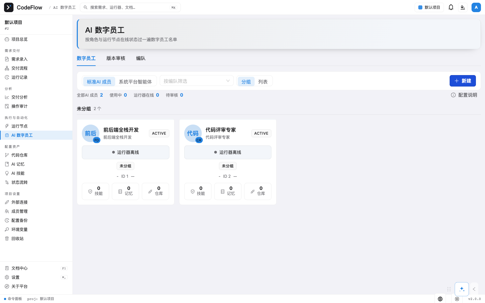
/agents/reviews):AI 数字员工配置的变更走版本化,提交后在此页审核,通过才进入上线流转——防止未评审的改动直接跑生产;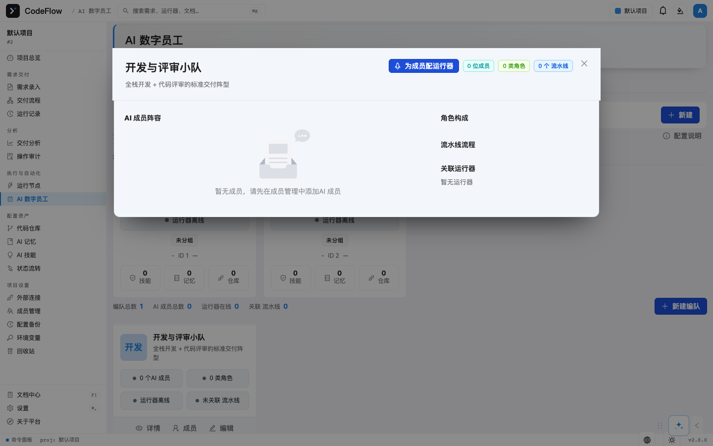
编队卡片的「0/3 在线」徽标 = 该编队当前在线的运行节点数 / 运行节点总数。评审不通过时按稳定问题清单返工,是编队的默认协作方式。

本章摘要:每个项目定义自己的交付流程;启动交付时选的流程,决定 AI 按什么路径干活。
入口:左侧导航 → 交付流程(/#/sdlcs),页面为「流程模板」列表(流程模版 / 模版间 / 编队工作流三个页签)。

| 元素 | 说明 |
|---|---|
| 流程模版 | 一次交付的步骤序列(如:分析与分支准备 → 编码与测试 → 验证与交付 → 交接评审),每步含目标、完成门、要求产物 |
| 模版间 | 模板之间的衔接(开发完成后接评审模板) |
| 编队工作流 | 编队视角的流程编排 |
| 新建 | 手工按步骤定义建流程 |
「详情」里可以逐步查看/编辑步骤定义;需求启动交付时选择的交付流程决定 AI 数字员工按什么路径干活。
本章摘要:真正干活的是运行节点——装在你自己的机器上,主动连回平台;代码在内网也没关系。
入口:左侧导航 → 运行节点(/#/executors)。
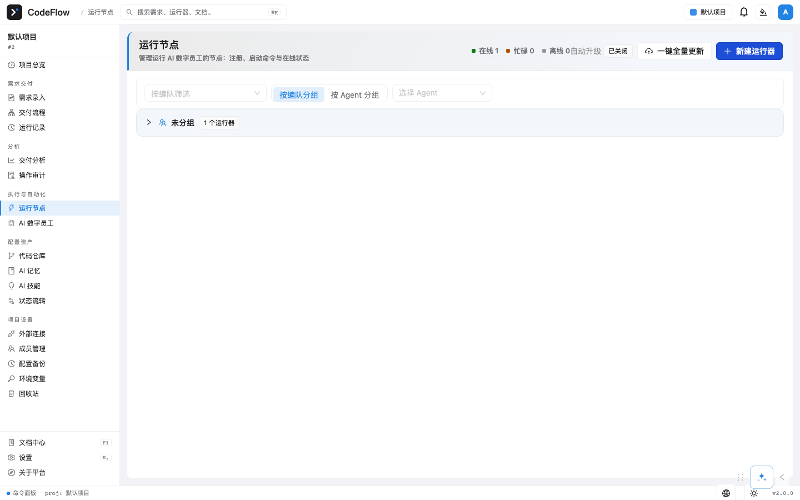
| 元素 | 说明 |
|---|---|
| 新建运行节点 | 归属 AI 数字员工 / 客户端类型(六种卡片单选)/ 并发数 / 记忆模式;创建成功弹窗直接给令牌与启动命令 |
| 运行方式三档 | 前台运行(调试,关终端即停)/后台挂起(nohup,崩溃不自愈)/系统服务(install-service,崩溃自愈 + 开机自启,推荐) |
| 复制入口×2 | 启动命令弹窗与创建成功弹窗都按当前选中的运行方式出命令;复制后贴到运行节点机器执行即可 |
| 卸载系统服务 | ymai-codeflow uninstall-service --executor-id <id> |
| 自动升级 | 开启后运行节点版本落后自动升级;「一键全量更新」按编队批量升级到平台推荐版本 |
| 分组视图 | 按编队 / 按 AI 数字员工分组;按编队筛选后看目标运行节点 |
| 在线状态 | 心跳判活 + 最近启动时间;离线的运行节点其排队派发会显示等待原因 |
| 运行节点详情 | 抽屉查看主机名/IP/版本/模型/最近启动/重启记录 |

运行节点侧安装与运行(注册、环境变量、接入任意 Anthropic 兼容模型端点)见仓库根 README.md 的「快速开始 B」;守护化细节见 docs/21-运行节点运维能力.md。
本章摘要:仓库是 AI 干活的代码仓,技能是挂到 AI 数字员工上的能力包。


/repos/map)可视化仓库之间的依赖与调用关系,滚轮缩放、拖动布局、点击查看详情;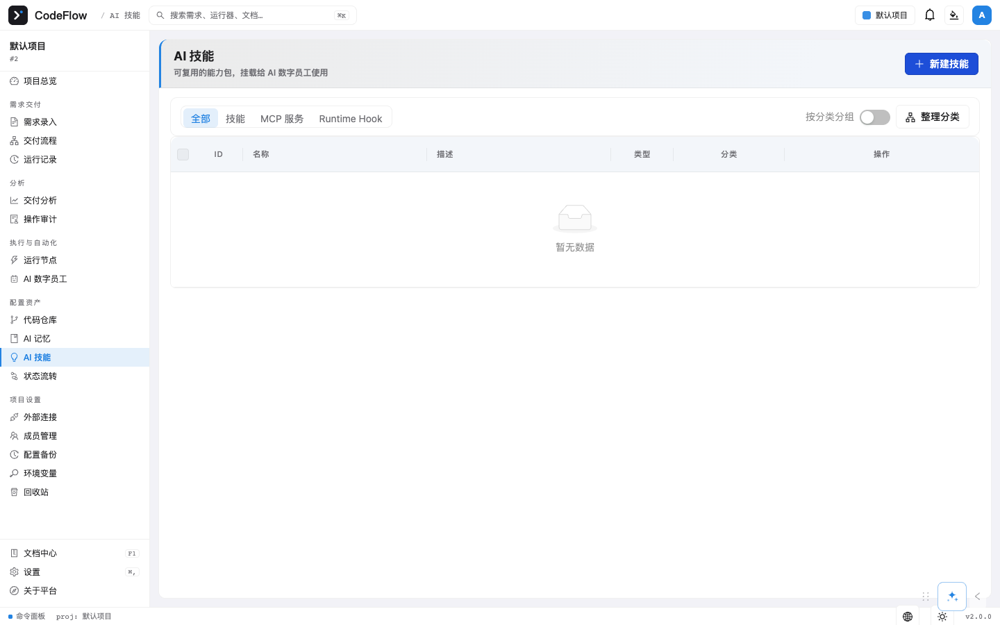
本章摘要:三步建绑定,之后禅道 Bug/需求自动进平台、交付结论自动回写评论;状态由人在禅道侧确认。
入口:左侧导航 → 外部连接(/#/integrations)。当前支持 禅道 ZenTao 18.10+。

http://zentao.example.com:8888)、集成账号、集成密码;点「测试连接」验证,通过后「加载产品」拉取产品列表;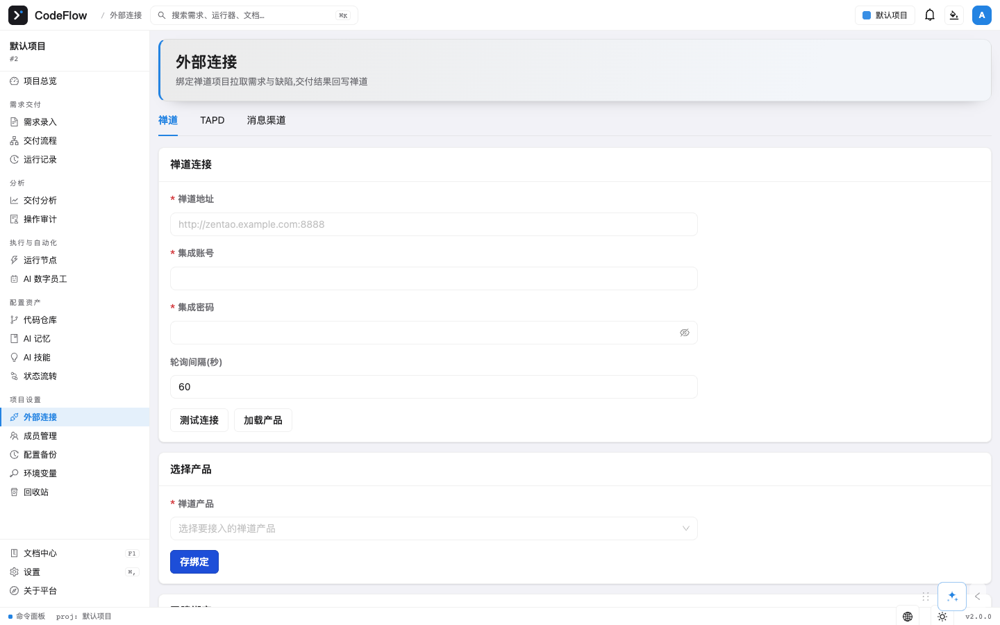
禅道 Bug/需求 → 平台自动拉取入库 → 指派 AI 数字员工交付 → 交付结论回写禅道完整闭环实录见 docs/18-禅道闭环E2E总结报告.md。
本章摘要:与禅道同构的四步接入:TAPD 项目绑定 → 自动拉取 → 交付 → 结论写回评论;结果未知时不盲目重发,读回确认。
入口:左侧导航 → 外部连接(/#/integrations)→ TAPD 页签。除禅道外,平台还能从 TAPD 拉取需求与缺陷,并把交付结论写回原单据。

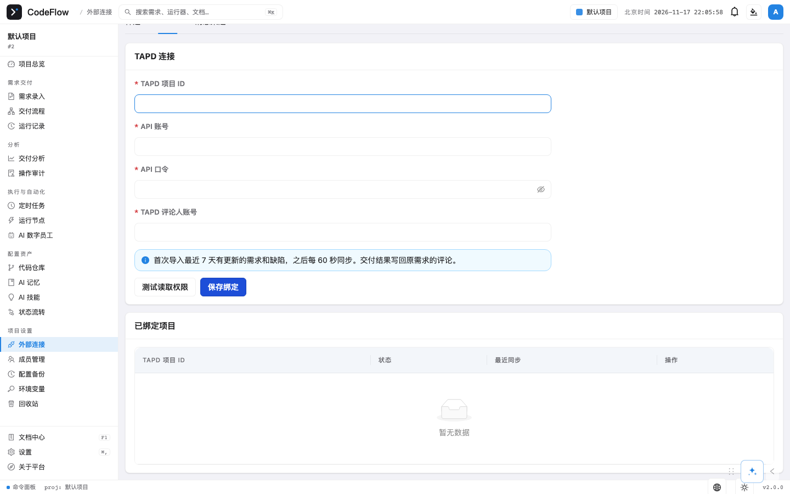
REQ 与 BUG,来源标 TAPD,标题下可直达 TAPD 原单据;{项目 ID}:{story|bug}:{单据 ID},例 1:bug:1010201;同一单据重复拉取不会产生重复需求,只会刷新标题、正文、类型与优先级;TAPD 需求/缺陷 → 平台自动拉取入库 → 指派 AI 数字员工交付 → 交付结论写回 TAPD 评论entry_type=stories、缺陷走 entry_type=bug,内容为 HTML,署名为上面填的评论人账号);TAPD 的 API 口令以密文存放,平台需要一把凭据加密主密钥:
export AINATIVE_SECRET_MASTER_KEY=$(openssl rand -base64 32)完整闭环与缺陷修复记录见 docs/12-待办台账.md 与仓库 server-v2/src/main/java/com/ainative/integration/tapd/MERGE-NOTES.md。
本章摘要:绑定群机器人后,派发进展、交接、评审结论自动推群;平台级选中渠道决定通知设置里显示哪个 IM 列。
入口:左树「外部连接」,或平台配置 → 协作通知。
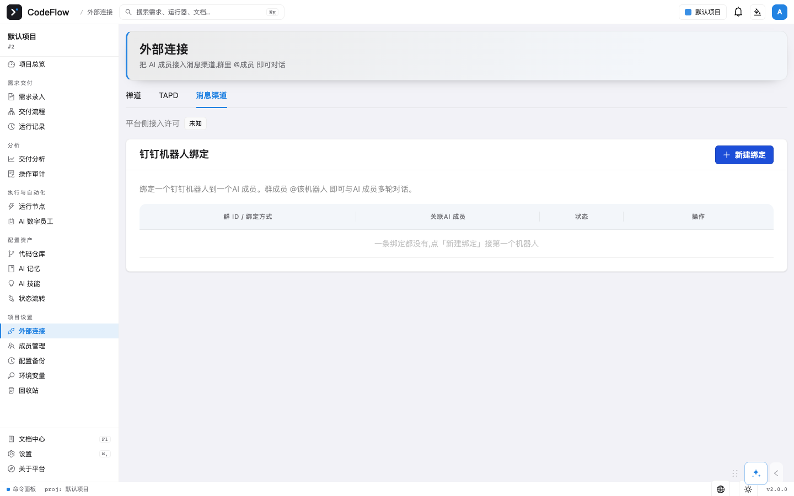
本章摘要:一枚 MCP 令牌,让 Claude Code / Cursor 在终端里直接操作平台;令牌即身份,泄露即吊销。
入口:右上角头像 → 个人设置(/#/profile/settings)。页签:基本信息 / IM 工号 / 企业身份 / MCP 令牌 / 修改密码 / 账号注销。

| 元素 | 说明 |
|---|---|
| MCP 服务地址 | http://<平台>/api/mcp/<MCP_TOKEN>/,建令牌时完整 URL 只展示一次 |
| 开放工具 / 能力聚合 | 当前 MCP 面暴露的工具数与能力数 |
| 访问令牌 | 令牌列表:名称 / 前缀 / 创建时间 / 最后使用 / 状态 |
怎么用:把 MCP 地址配到你的 Claude Code / Cursor 等 CLI(claude mcp add --transport http ainative <url>),即可在终端里让 AI 直接操作平台:建需求、查需求、配置编队、启动交付等。令牌权限跟随你在目标项目内的权限。
本章摘要:成员、状态机、环境变量、配置备份在「项目设置」组;品牌与平台级选项在右上「平台配置」;⌘, 打开设置弹窗。
| 页面 | 入口 | 说明 |
|---|---|---|
| 品牌配置 | 右上「平台配置」 | 平台名称 / Logo / 主题色 / 消息渠道,变更即时生效于全平台 |
| 成员管理 | 左树 → 成员管理 | 邀请/移除/只读者/Owner 移交 + 角色管理 + 待审批访问申请 |
| 状态流转 | 左树 → 状态流转 | 需求状态机模板,定义状态列与合法流转 |
| 环境变量 | 左树 → 环境变量 | 项目级环境变量,AI 数字员工执行时可读取(值默认脱敏展示) |
| 配置备份 | 左树 → 配置备份 | 一键备份当前项目的交付流程、AI 数字员工及版本、编队、仓库关系、AI 记忆、AI 技能等,可恢复 |
| 设置弹窗 | 左树底部「设置 ⌘,」 | 左类目 + 右内容:AI 配置 / 通知配置 / 系统配置 |
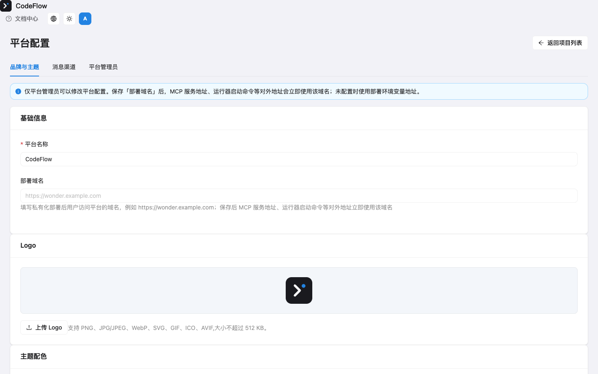

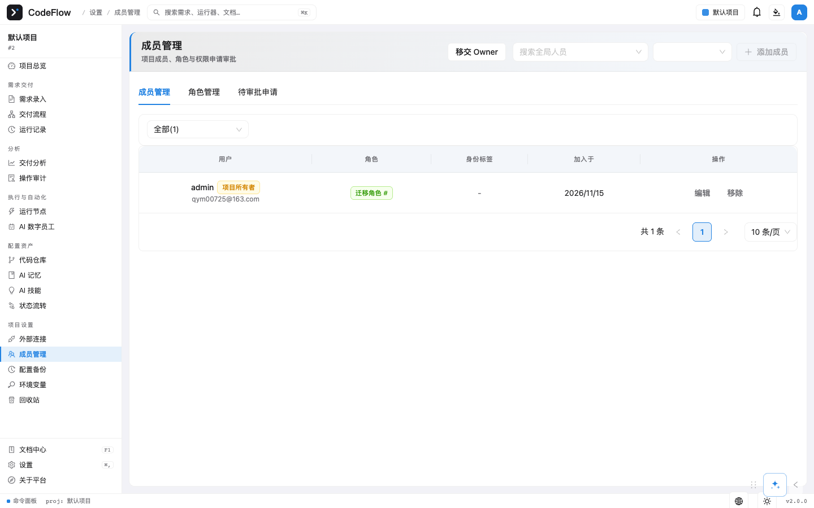

本章摘要:交付完不是结束:运行记录看每次执行,交付分析找瓶颈,操作审计留证据。


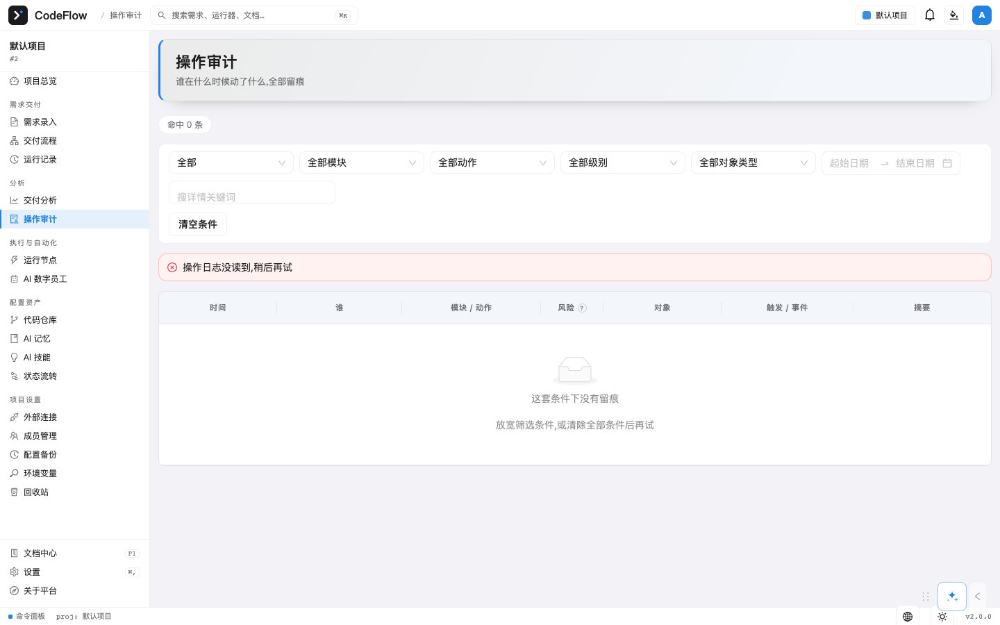

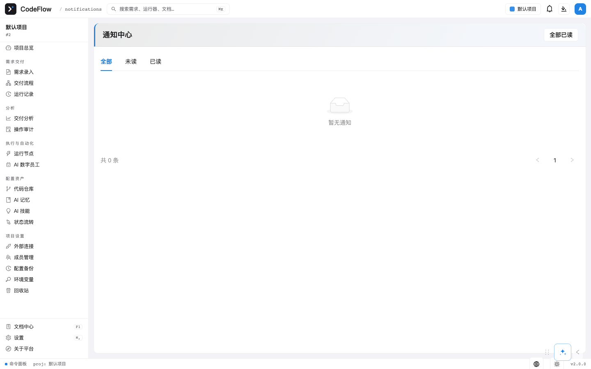
本章摘要:「交付 9 号线」地铁图把九段生命周期画成一条地铁线;文档中心内置分步图文。
入口:左树底部「关于平台」。


ainative MCP 技能包(help/assets),供外部 CLI 客户端加载后获得平台操作指引。本章摘要:三条高频动线:禅道缺陷全自动修复回写、平台内需求交付、外部 CLI 操作平台。
claude mcp add --transport http ainative <url>;本章摘要:这些是设计如此、或当前版本明确不做的事——遇到对应现象,先对照这里,再判断是不是故障。
| 边界 | 表现 | 为什么 |
|---|---|---|
| 不代改外部单据状态 | 交付结论只回写禅道 / TAPD 评论,「已解决 / 关闭」仍需人工在外部系统按 | 修没修好是人的判断,工具代关单等于把验收责任扔给机器 |
| 外部需求不可平台侧删除 | 禅道 / TAPD 拉来的需求删除受保护,必须回源头处理 | 源头数据以源头为准,平台侧删除会造成双端不一致 |
| 不反向改写外部内容 | TAPD 正文只读展示;状态映射只把外部状态同步成平台状态,不反向改写 | 平台是消费方,不是外部系统的编辑器 |
| 排队不空转 | 运行节点离线时派发按指数退避等待并显示原因,上线自动唤醒 | 宁可等得明白,不要假执行 |
| 不做的事 | 说明 |
|---|---|
| 需求说不清,它救不了 | 澄清能把"没说清"问出来,但答案得在你心里 |
| 不装环境 | 运行节点上缺 JDK、Maven、Node,任务就会失败;平台派活,不装环境 |
| 不是无人值守 | 澄清要你参与,方案确认要你点头,验收要你看;省掉的是"盯着干活",不是"做判断" |
| 模型额度是真门槛 | 长任务中断在中间,重跑 Token 再花一遍;确定性任务建议用 Flash 模型,澄清和评审用旗舰模型 |
AINATIVE_SECRET_MASTER_KEY);更换后已保存的外部绑定需重新保存;本章摘要:平台各处默认值一页对照;改过的配置以你的实际配置为准。
| 参数 | 默认值 | 出处 |
|---|---|---|
| 禅道轮询间隔 | 60 秒 | 第 12 章 |
| TAPD 轮询间隔 | 60 秒 | 第 13 章 |
| TAPD 首次拉取窗口 | 最近 7 天有更新的单据 | 第 13 章 |
| TAPD 优先级映射 | high/urgent→1,medium/middle/normal→2,low→3 | 第 13 章 |
| 禅道状态映射 | active→待处理,resolved→待验证,closed→已完成 | 第 12 章 |
| 需求附件大小 | 单个 5MB,总共 20MB | 5.2 节 |
| 自定义背景大小 | ≤1.2MB(前端自动压缩) | 2.1 节 |
| PowerContext 超时 / 写回 | 8 秒 / 默认写回 | 第 23 章 |
| 引导页运行节点探测 | 每 3 秒一次 | 第 3 章 |
| 派发排队策略 | 指数退避等待 + 运行节点上线自动唤醒 | 第 7 章 |
| 运行方式推荐档 | 系统服务(崩溃自愈 + 开机自启) | 第 10 章 |
| MCP 令牌完整 URL | 仅创建时展示一次 | 第 15 章 |
| 外部回写防重 | 唯一 marker,幂等;5xx 读回确认后才置完成 | 第 12、13 章 |
Q:派发一直"排队中"怎么办? 看交付进度跟踪里的等待原因。等待运行节点上线 = 运行节点没连上(去运行节点页看在线状态、检查 daemon 是否存活、是否同 executorId 起了两个实例);运行节点容量已满 = 在跑的任务太多,等空闲或加运行节点。排队有指数退避与上线自动唤醒,不需要手动重发。
Q:AI 数字员工交付失败了,先看什么? 交付进度跟踪 → 失败派发 → 查看执行:日志里通常能看到是模型端点问题(配额/网络)、仓库权限问题还是步骤完成门未达标。修复后点「重试」。
Q:禅道需求拉取了但没回写? 检查三处:绑定是否启用、本地需求是否流转到了与禅道映射的完成类状态、时间线上回执事件的状态。回执失败会在时间线留痕并自动重试。
Q:平台流转完了,禅道状态怎么没变? 设计如此:平台只回写交付备注,不代改禅道单据状态(见第 20 章)。「已解决 / 关闭」请回禅道侧确认后手工操作。
Q:模型能换吗? 能。运行节点侧任意 Anthropic 兼容端点即可(Claude / MiniMax / GLM / Kimi / DeepSeek / 私有模型),改运行节点 env 的 ANTHROPIC_BASE_URL / ANTHROPIC_AUTH_TOKEN / ANTHROPIC_MODEL 后重启 daemon。
Q:MCP 完整令牌 URL 丢了? 令牌只在创建时展示一次,丢了就吊销重建。列表里的"前缀"只用于辨认。
Q:需求删错了? 回收站恢复。外部来源(禅道/TAPD)需求不可删,需回源头处理。
本章摘要:可选接入的跨需求记忆:dispatch 前注入历史决策,交付后写回结论;不配置即完全关闭。
平台可选接入 PowerContext(Apache 2.0 的 AI Agent 上下文服务),为 AI 数字员工提供跨需求记忆:dispatch 开工前自动注入历史决策/约束,交付后写回本次关键结论。不配置即完全关闭,零影响。
配置(运行节点 runtime 的 env,见 .env 模板):
| 变量 | 说明 |
|---|---|
POWERCONTEXT_BASE_URL | PowerContext Server 地址(如 http://127.0.0.1:8077);不配 = 关闭 |
POWERCONTEXT_TIMEOUT_SEC | HTTP 超时,默认 8s |
POWERCONTEXT_REMEMBER | 是否写回(默认 1) |
工作方式:CodeFlow 项目 ID ↔ PowerContext Scope 一次性绑定(bind_workspace)后,每次派发:①/v1/context/prepare 有界召回 → 写入交付目录 powercontext-context.md 随 prompt 注入(内容自带「资料非指令」信任边界声明);②交付成功后摘要写回 Memory(幂等键=dispatch ID)。所有失败静默降级,绝不阻断交付。
本手册随库提供排版后的 PDF 版本:docs/manual-pdf/CodeFlow-用户操作手册-v2.0.2.pdf(A4 · 页码/页脚 · 封面版式),HTML 源文件同目录(manual.html)。文案改动后用 node scripts/docs-tools/manual-md2html.mjs 重建 HTML、node scripts/docs-tools/export-manual-pdf.mjs 重新导出 PDF。
| 版本 | 日期 | 说明 |
|---|---|---|
| v2.0.2 | 2026-11-17 | 全册按最新界面实机重写:导航五组(需求交付/分析/执行与自动化/配置资产/项目设置),术语全面对齐(需求录入/交付流程/运行节点/AI 数字员工/交付分析/操作审计/配置备份);改为「认识产品 / 使用指南 / 参考」三部分结构,开篇新增阅读指引(按角色给阅读路径);新增已知边界与使用须知与默认参数速查两章;第 1 章新增数据实证表;配图按「图 部分号-序号」重编,整册 44 张实机重拍;版式升级(签名色主题 + 部分扉页)。同批修复:交付分析成本面板 500(前端 agentId=all 规避)、运行节点 daemon 环境变量覆盖丢失(max_turns 配置不生效)。 |
| v2.0.1 | 2026-11-15 | 新增「外部连接:TAPD」整章(绑定四步、需求/缺陷同步、交付结论回写与结果未知时的读回确认、部署主密钥前提);禅道闭环按平台 2.0.0 实际行为订正——平台只回写交付备注,不代改禅道单据状态;全篇章节编号重排;清理正文遗留的「v1.3」字样。 |
| v2.0.0 | 2026-11-12 | 手册编号对齐平台版本(规则见 00 号文档 §9)。交付验证后增补:「交付 9 号线」地铁图、项目总览 KPI 八卡同构、消息渠道飞书选中态说明。同批交付验证:两个真实产品(性能测试平台/电商网站)经平台全流程开发并部署,记录见 delivery-verification 目录。 |
| v1.2 | 2026-11-11 | 大改版全量更新:登录页 editorial 背景 + 生命周期价值链动效;全站墨色横幅设计系统;主题工作台;运行节点启动命令三模式;交付分析成本卡回归暖橙;新增截图 15 张。 |
| v1.1 | 2026-11-04 | 全量功能补齐 + 封面重设计:新增交付总览、执行记录、自进化、成员与角色、项目备份、仓库关系图、AI 生成流程、版本审核流程说明。 |
| v1.0 | 2026-11-04 | 首版。覆盖当前构建全部 28 个页面与关键交互;发布前完成 UI 全量回归 31/31 通过、0 缺陷。 |